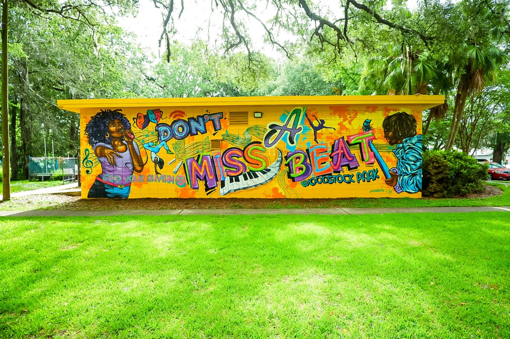

Urban areas facing poverty often struggle with issues such as neglect, underinvestment, and a lack
of resources to beautify their surroundings. However, one nonprofit organization is striving to make a
difference in these communities by offering free murals and landscaping/lawn services. This organization
aims to transform the urban landscape, improve the quality of life of local residents, and promote
community engagement through public art and green spaces. By utilizing the power of art and nature, this
nonprofit is creating positive change in underserved neighborhoods, one mural and one garden at a time.
Landscaping and Lawn Service
By offering free lawn and landscaping services, these nonprofits are not only beautifying outdoor
spaces but also making a positive impact on the lives of people in poverty. A well-maintained lawn can
improve the curb appeal of a home, increase property values, and provide a safe outdoor space for families
to enjoy. Additionally, the job training and leadership development opportunities offered by some organizations
can provide valuable skills and a path out of poverty for young people. In many communities, having a well-maintained
lawn or garden is a sign of pride and care for one's home. However, for many people living in poverty, the cost of
maintaining their outdoor spaces can be a significant financial burden. This is where nonprofit organizations that
offer free lawn and landscaping services come in to make a difference. ...
One such organization is GreenCare for Troops, a program of Project EverGreen, a national nonprofit committed to creating
a greener, healthier, cooler Earth. GreenCare for Troops provides free lawn and landscaping services for the families of
deployed military personnel, as well as disabled and elderly veterans. The program matches volunteers, such as lawn care
professionals and landscape contractors, with the families in need of their services. Another nonprofit organization that
offers free lawn care services is Lawns to Leaders, based in St. Louis, Missouri. This organization provides free lawn care
services to homeowners and organizations in low-income areas of the city. They also offer job training and leadership
development opportunities to young people from these neighborhoods, giving them valuable skills and work experience.
Nonprofits like GreenCare for Troops and Lawns to Leaders demonstrate that even small acts of kindness can make a big
difference in the lives of others. Their commitment to improving outdoor spaces and providing job training opportunities is
a reminder of the power of community and the importance of supporting those in need.

Murals
Murals are a powerful form of public art that can transform a neighborhood, uplift its residents, and attract
visitors. Unfortunately, many low-income neighborhoods lack access to public art, which can exacerbate feelings of
neglect and isolation. That's where nonprofit organizations like "Mural for All" come in.
"Mural for All" is a nonprofit organization that is dedicated to creating beautiful, thought-provoking murals in
low-income neighborhoods across the country. Their goal is to provide free public art that reflects the community's
culture and identity while also attracting more people to the surrounding businesses. The process starts by identifying
communities that could benefit from a mural. The organization then works with local businesses and community leaders to
determine the best location for the mural and the theme that will resonate with the community. Once the design is
finalized, the organization sets to work with a team of artists to bring the mural to life.
These artists are often local themselves, ensuring that the mural reflects the community's identity and culture.
The impact of these murals can be transformative. They not only beautify a neighborhood but also provide a sense of pride
and ownership for the community. They also attract more visitors to the area, which can help local businesses thrive.
In addition to their mural work, "Mural for All" also runs community programs that promote the arts and help develop the
next generation of artists. These programs include after-school programs, workshops, and mentorship opportunities.
Overall, "Mural for All" is an inspiring example of how public art can transform a community. By providing free murals to
low-income neighborhoods, they are creating a more beautiful, connected, and prosperous world, one mural at a time.